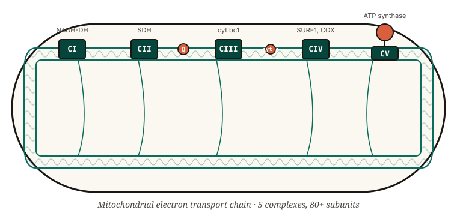
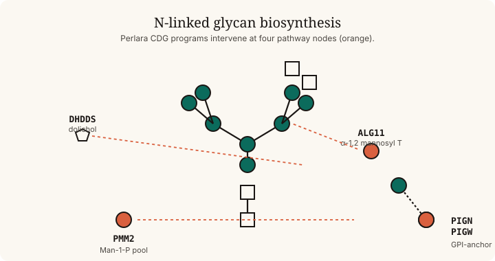

A vertically integrated engine for inherited metabolic diseases: build a humanized yeast avatar, screen a standardized library of ~8,400 compounds, validate hits in patient cells, and translate into a registrational trial alongside the family and foundation that brought us the program.

| Stage | Method | Output | Timeline |
|---|---|---|---|
| 01 Model | Humanized yeast strain (S. cerevisiae or Y. lipolytica) phenocopying the patient variant. Y. lipolytica is critical for Complex I. | Quantifiable growth / respiration phenotype. | 4–12 weeks |
| 02 Screen | Profile the ~8,400-compound TargetMol library at multiple doses. Score rescuers (Z ≥ 2.5) and sensitizers (Z ≤ −2.5). | Ranked hit list with mechanism-of-action context. | 6–10 weeks |
| 03 Validate | Test top hits in patient fibroblasts, iPSC-derived neurons, or organoids. Confirm mechanism in an orthogonal assay. | Translationally-credible compound shortlist. (SURF1: 6/12 hits validated.) | 3–6 months |
| 04 Translate | IND-enabling work, compassionate-use, N-of-1, then a registrational trial co-designed with the patient foundation. | A labeled therapy or strong off-label case. | 18–36 months |
Yeast has ~30% ortholog overlap with the human Mendelian disease genome, the fastest growth curve of any eukaryote, and — critically — tolerates gene-dose mutations that are lethal in mammalian cells. A campaign that takes a mouse facility 18 months takes us 8 weeks.
Mitochondrial disorders affect ~1 in 4,300 children and have essentially no labeled therapies. The Perlara mitochondrial portfolio covers Complexes I–V using Yarrowia lipolytica (which uniquely retains a functional Complex I) and S. cerevisiae.

Yeast screen complete; 6 of 12 top rescuers reproduced in patient fibroblasts. Currently in IND-enabling planning with Cure Mito Foundation.
Y. lipolytica humanized strains under construction for the most common CI subunits. SBIR Aim 1.
Initial yeast strains in design phase. Family partnerships via United Mitochondrial Disease Foundation.
Congenital disorders of glycosylation (CDGs) are the prototypical Perlara program: well-defined enzymes, dramatic patient phenotypes, and a tractable yeast model thanks to ~70% pathway conservation.

The flagship Perlara program. 40-patient Phase III at Mayo Clinic Minnesota; an aldose-reductase inhibitor approved in Japan, repurposed.
α-1,2 mannosyltransferase deficiency. Yeast avatar in build; screen entering Q3 batch.
Multi-family collectives for these GPI-anchor disorders. PIGW screen complete; one parent-driven N-of-1 in protocol design.
Dolichol biosynthesis defect. Yeast model active; first batch screen complete.
The complete Perlara 3.0 pipeline. Programs marked “Validate” have confirmed yeast-to-patient-cell translation; “Translate” are in IND-enabling, compassionate-use, or trial-design phase.
| Program | Gene / mechanism | Stage | Partner |
|---|---|---|---|
| Maggie’s Pearl | PMM2-CDG · aldose reductase inhibitor | 04 Translate · Phase III, Mayo Clinic | Maggie’s Pearl Foundation |
| SURF1 Leigh Syndrome | SURF1 · Complex IV assembly | 03 Validate · fibroblast validation done | Cure Mito Foundation |
| FOXG1 Cure Odyssey | FOXG1 syndrome · neurodevelopmental | 02 Screen · hits triaged | FOXG1 Research Foundation |
| DHDDS Cure Odyssey | DHDDS · dolichol biosynthesis | 02 Screen | Cure DHDDS |
| NARS1 Cure Odyssey | NARS1 · asparaginyl-tRNA synthetase | 02 Screen | NARS1 Cure Alliance |
| PIGW | GPI-anchor biosynthesis | 02 Screen · N-of-1 design | Family-led |
| PIGN Cure Collective | GPI-anchor biosynthesis | 02 Screen | Cure PIGN Collective |
| ADSL Cure Odyssey | ADSL · purine biosynthesis | 02 Screen | ADSL Family Network |
| ECHS1 Cure Odyssey | ECHS1 · valine catabolism | 02 Screen | ECHS1 Alliance |
| ALG11-CDG | ALG11 · N-glycosylation | 01 Model | CDG CARE |
| ETC Complex I–V suite | CI / CIV / CV with Y. lipolytica | 01 Model · SBIR Aim 1 | SBIR-funded |
cms/pipeline-programs.csv.
NIH NCATS Direct-to-Phase-II award funds the ETC Complex I–V buildout in Yarrowia lipolytica and S. cerevisiae.
Most programs are co-funded by the disease-specific foundation that brought the patient. Examples: Maggie’s Pearl, Cure Mito, FOXG1 Research Foundation.
The Chan Zuckerberg Rare As One and Undiagnosed Diseases Network feed variant-specific avatar requests directly into the REMIT pipeline.